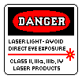

It is intended specifically to be used with the types of lasers found in the laser kits. Most are less than 1.5 mW and the HV power supplies for the laser tubes produce 1.0 to 1.5 kV typically at 5 mA or less. But a few are in the 2 to 5 mW range with tube voltages of up to 2.5 kV and tube current up to 6.5 mA.
The material here is NOT sufficient to cover issues related to higher power lasers including serious vision damage and electrocution or vaporization (in which ever order you prefer) from much larger power supplies.
Low power red (633 nm) HeNe lasers (0.5 to 5 mW) require up to 2.5 kV at a constant current of between 3 and 6.5 mA (depending on specific model tube) while running with a starting voltage of 3 to 10 kV (but at almost no current).
With modern HeNe laser power supplies based on high frequency inverters ("bricks", whether AC or DC input), the output current is well regulated, with the voltage adapting to the tube's characteristics. 6.5 mA is well below the threshold where muscle spasms make it impossible to let go, so it's mostly a matter of annoyance, but that could also involve tossing the equipment across the room due to a reflex reaction, which is bad form at least.
When wiring up any of the laser tubes in the kits, the main thing to avoid is touching the anode-end of the tube or any ballast resistors or wiring attached to it. The anode is the end of the tube with the thick glass rod inside. The cathode-end of the tube has the aluminum can inside and is at ground potential for any of the power supplies used in the kits.
The diagram below shows the wiring for the most common 0.5-1.5 mW 6 inch laser tubes and mounts. It also applies to other tubes that can use the same power supply and brackets. The main beam may exit either from the anode or cathode end of the tube depending on the tube model. (There will also be a much weaker "waste" beam from the opposite end.) But the +HV fat red wire MUST be connected to the anode-end of the tube. So that's the end to avoid touching. The end of the tube from which the main beam emerges can be determined by inspecting the outer surface of the mirror substrate for a bluish purplish Anti-Reflection (AR) coating. This is usually only present on the output mirror.

High Voltage Rule 1: Keep one hand in your pocket while working around high voltage! That way there is no path across your body and through your heart. Even if you accidentally touch a live terminal, there is no place for current to flow. So there would be at most a tingle or shock similar to that of walking across a carpet on a dry day and touching a doorknob due to your body's capacitance. This is the same reason birds can happily perch on 500 kV high tension lines.High Voltage Rule 2: Wear rubber-sole shoes (like sneakers or athletic shoes since rubber is an excellent insulator and there are no metal tacks securing layers of leather). Nonetheless, DO NOT stand on a wet floor!
With both of these rules adhered to, touching the anode-end of the tube will result in at most the sensation of a pin prick and the glow in the tube will flicker. Yes, I did confirm this. ;-)
The critical parts to avoid touching in this diagram are the metal end-cap at the anode-end of the tube, any exposed metal within the mounting bracket, and the screw and lug securing the red HV wire and ballast resistor(s). When the brackets are attached to a mounting surface with the tube snug inside (so it can't move around), the only chance of contacting the HV is via the perimeter of the anode end-cap, and via the screw securing the cable. So to be doubly safe, the end-cap can be insulated with tape or plastic sleeve and a blob of RTV silicone or Epoxy will assure that it is well insulated. The ballast resistor(s) should be insulated, don't trust it, so insulation can also be added there.
The fat black wire is connected directly to the negative of the DC power supply and touching the cathode-end of the tube or anything attached to it should be safe.
Where a clip is being used for the HV connection to the tube rather than the mounting bracket, to be doubly sure of avoiding contact with the HV, an insulating cover or tent can be placed over the laser or at least the anode-end of the tube, the HV parts can be covered with several layers of insulating tape (black electrical tape, kapton tape, or even clear packing tape), or wrapped in plastic sheet or bits of bicycle inner tube.
The optics to detect the beam for feedback may need to receive the output from the anode-end of the tube (as shown in the lower diagram), so locating them at least an inch away will assure that the HV can't jump to their photodiodes or your fingers wile adjusting their position. The end of the tube can also be covered with an insulator only allowing for the beam to exit via a small hole.
Since the bare tubes and power supply to which they are attached will also hold a charge for awhile after being powered off due to internal capacitance, it is useful to be able to discharge the tube safely. This can be done with a wire and HV resistor of around 1M ohms. The resistor can be constructed from 3, 330K ohm 1/4 W resistors in series and attached to a pair of insulated wired. Multiple resistors in series are desirable to meet the voltage rating of the resistors, which for typical 1/4W resistors is a few hundred volts each. 1M ohms is a low enough resistance that it will discharge the capacitance in a fraction of a second but high enough that the power supply won't be damaged if left in place accidentally when powering the laser. However, the tube may not start because the load is too low to allow the starting voltage to build up. Somewhat higher or lower (by a factor 2) will be fine as well.
The beam from a 1 mW laser will appear roughly as bright as the noonday Sun. So a momentary glance will result in at most a short-lived afterimage but no permanent harm. However, it still makes sense to avoid this if at all possible. And a game of "chicken" to see how long you can stare directly into it is definitely ill advised.
As a point of reference, in the USA, 1.5 mW is less than one third of the maximum output power of a legal laser pointer (5 mW). In most other countries, it is just over their 1 mW limit. But many laser pointers (especially green ones) are way over the limits regardless of what the safety sticker states, and technically illegal.
But what this does mean is that the primary risk is from the direct beam from the laser, or its reflection from shiny planar surfaces like mirrors. Reflections from anything else may result in a bright flash but will be totally harmless.
Laser safety for these low power visible lasers is largely about work habits. Laser safety eye-wear (goggles) can provide 100 percent protection against eye exposure but may be worse than nothing if they block 100 percent of the light at the laser wavelength being used and thus there may be a temptation to lift them to see where the beam is and get a direct shot in the eye (which for these low power lasers is at most annoying). More on this below.
A compromise are available from companies like Thorlabs. For example, their LG13 series are around OD1.5 at 633 nm. OD1.5 means that the transmitted light is reduced by approximately a factor 30, resulting in under 200 µW for a 5 mW beam. This is ideal as exposure is reduced to a safe value while the location of the beam is still visible for alignment. While not exactly inexpensive at $165US, they are at the lower end of the cost range for high quality goggles. See Thorlabs Certified Laser Safety Glasses.